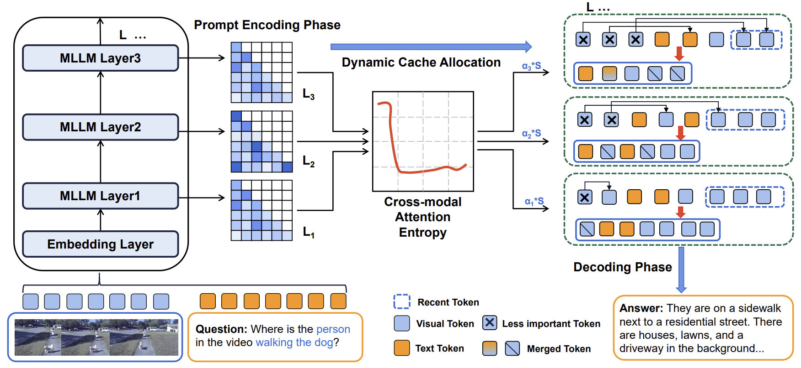
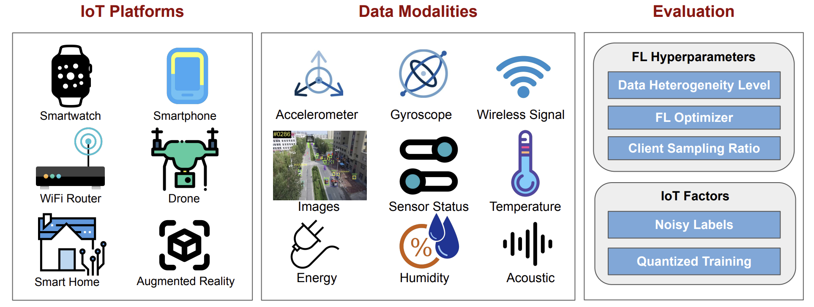

Publications |
2025
|  |
Zhongwei Wan, Hui Shen, Xin Wang, Che Liu, Zheda Mai, Mi Zhang Under submission to NAACL 2025 |

|
Xin Wang, Samiul Alam, Zhongwei Wan, Hui Shen, Mi Zhang Under submission to NAACL 2025 |

|
Hui Shen*, Jingxuan Zhang*, Boning Xiong*, Rui Hu*, Shoufa Chen, Zhongwei Wan, Xin Wang, Yu Zhang, Zixuan Gong, Guangyin Bao, Chaofan Tao, Yongfeng Huang, Ye Yuan, Mi Zhang Under submission to TMLR |
2024

|
Jing Xiong, Gongye Liu, Lun Huang, Chengyue Wu, Taiqiang Wu, Yao Mu, Yuan Yao, Hui Shen, Zhongwei Wan, Jinfa Huang, Chaofan Tao, Shen Yan, Huaxiu Yao, Lingpeng Kong, Hongxia Yang, Mi Zhang, Guillermo Sapiro, Jiebo Luo, Ping Luo, Ngai Wong Under submission to TMLR GitHub Repo / Paper |

|
Shakhrul Iman Siam, Hyunho Ahn, Li Liu, Samiul Alam, Hui Shen, Zhichao Cao, Ness Shroff, Bhaskar Krishnamachari, Mani Srivastava, Mi Zhang ACM Transactions on Sensor Networks (TOSN) GitHub Repo / Paper |

|
Hui Shen, Zhongwei Wan, Xin Wang, Mi Zhang ECCV 2024 @ Computational Aspects of Deep Learning (Best Paper Award) Code / Paper |

|
Che Liu, Zhongwei Wan, Yuqi Wang, Hui Shen, Haozhe Wang, Kangyu Zheng, Mi Zhang, Rossella Arcucci arXiv Paper |

|
Zhongwei Wan, Che Liu, Xin Wang, Chaofan Tao, Hui Shen, Zhenwu Peng, Jie Fu, Rossella Arcucci, Huaxiu Yao, Mi Zhang Under submission to ACL 2025 Code / Paper |
2023
|  |
Samiul Alam, Tuo Zhang, Tiantian Feng, Hui Shen, Zhichao Cao, Dong Zhao, JeongGil Ko, Kiran Somasundaram, Shrikanth S Narayanan, Salman Avestimehr, Mi Zhang Journal of Data-centric Machine Learning Research (DMLR) Code / Paper |